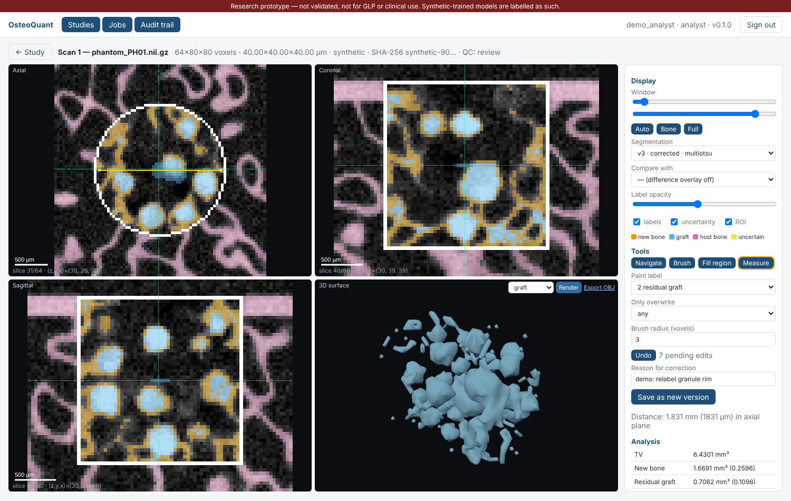

Measure bone-graft healing the same way, every time.
OsteoQuant is building auditable micro-CT analysis for preclinical bone-defect studies: separating newly formed bone, residual graft and host bone, with human review, locked model versions and a traceable report. We are at the research-prototype stage and are looking for scientific collaborators and pilot partners.
Talk to us about a pilotWhere we are (November 2026)
| Built and tested | Analysis pipeline (ingestion incl. Zeiss TXM, QC, defect ROI, segmentation, morphometry), researcher viewer with correction and sign-off, hash-chained audit trail, PDF/CSV reports |
|---|---|
| Shown on real public data | Trabecular thickness agreement with Scanco IPL reference maps on 8 public samples (ICC 0.98); ingestion and ROI detection on public ovine callus scans |
| Shown only in simulation | Three-class graft / new-bone / host-bone segmentation; when graft and new bone become inseparable; benefit of a day-0 baseline scan |
| Not yet done | Validation on real graft materials (physical phantom study planned), customer pilots, GLP validation |
What we are building
Separability check research
Before a study: can micro-CT alone distinguish your graft from new bone at your voxel size — or do you need a day-0 scan or histology?
DefectFill report prototype
Defect ROI, three-class segmentation with reviewer correction, ASBMR-style endpoints, animal-level statistics and a reproducible record.
Audit-ready process prototype
Locked model hashes, versioned corrections, re-authenticated sign-off and tamper-evident logs. Not yet validated for Part 11 or GLP.
Prototype workbench

Screenshot of the research prototype on a synthetic phantom (not real tissue).
Who we want to hear from
- Orthobiologic and bone-graft R&D teams who run animal defect studies
- Preclinical CRO imaging and pathology groups
- Bone biologists and micro-CT scientists interested in a known-truth phantom benchmark